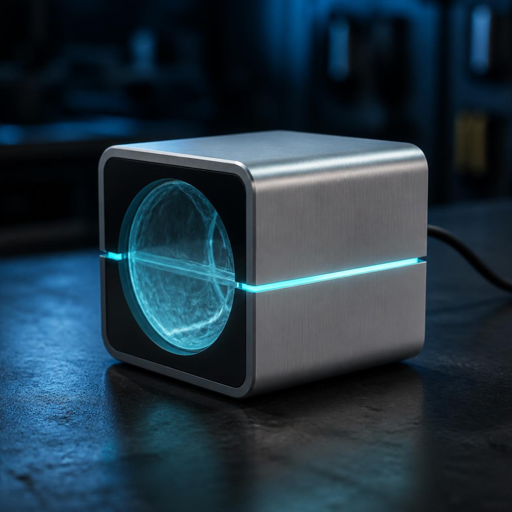
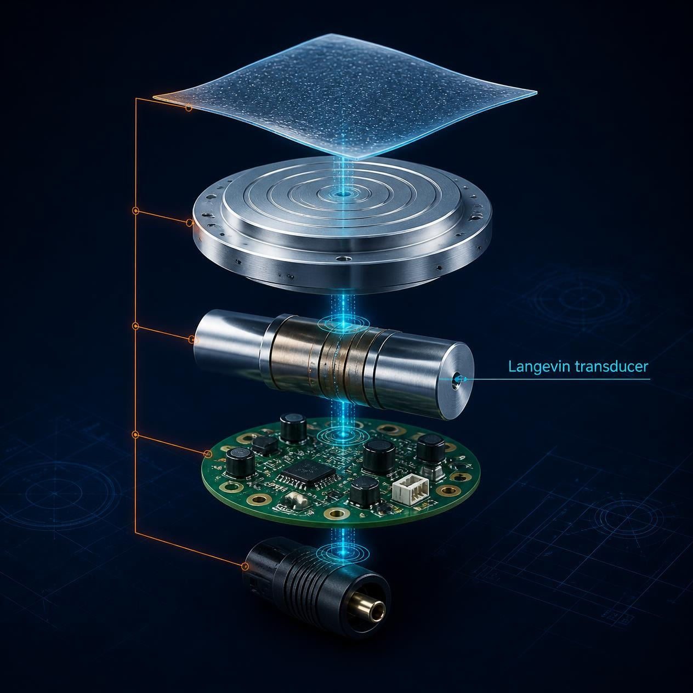
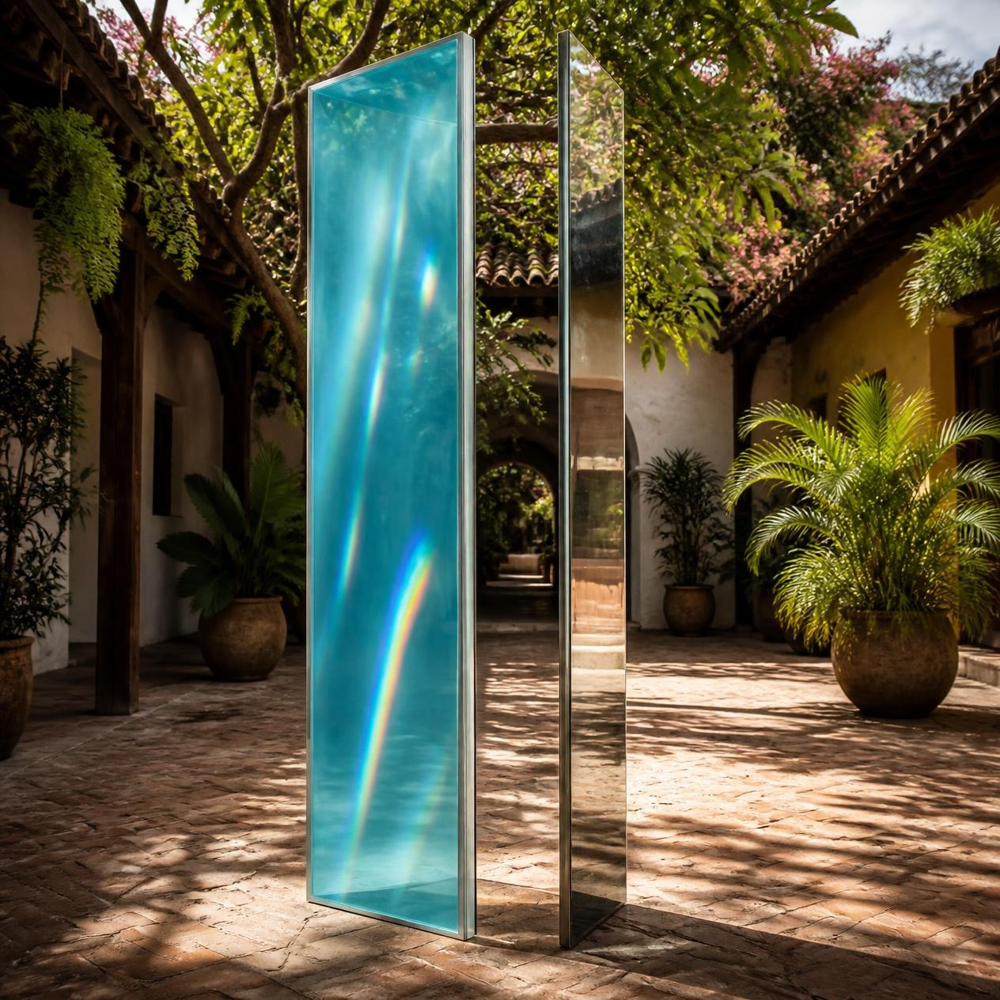
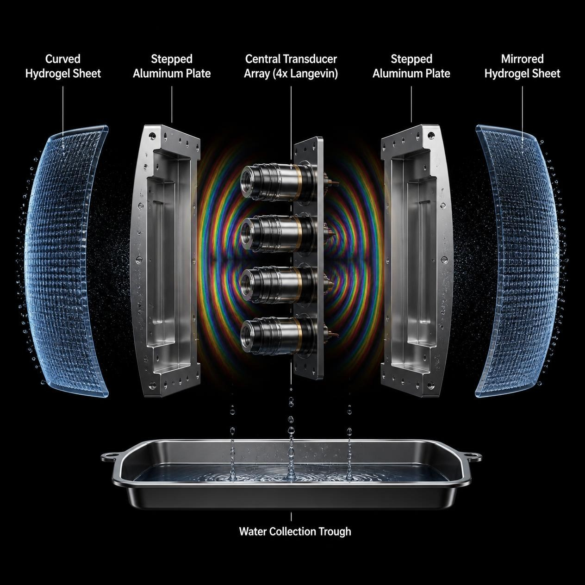
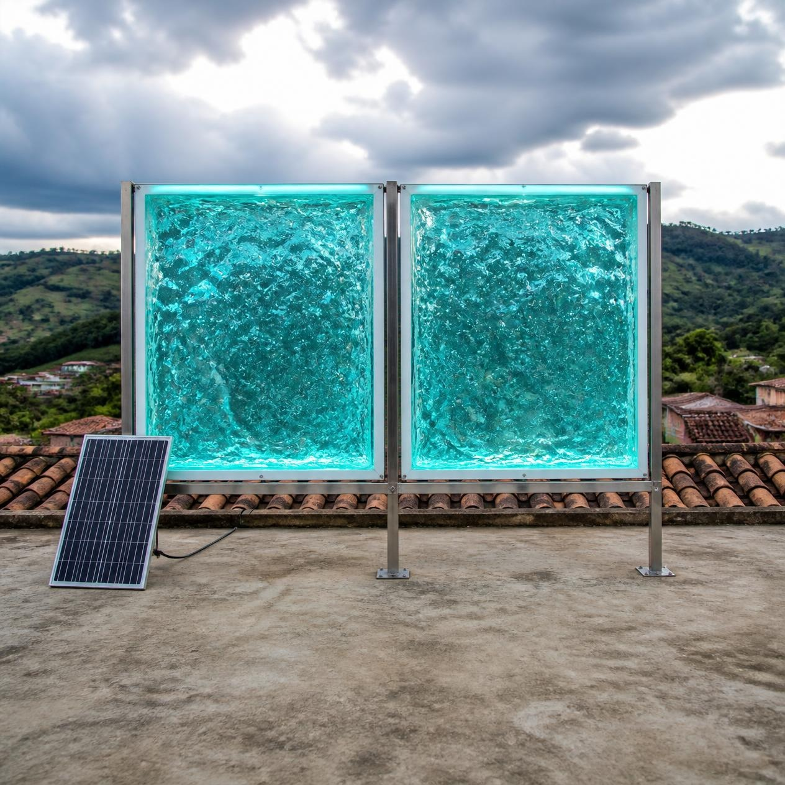
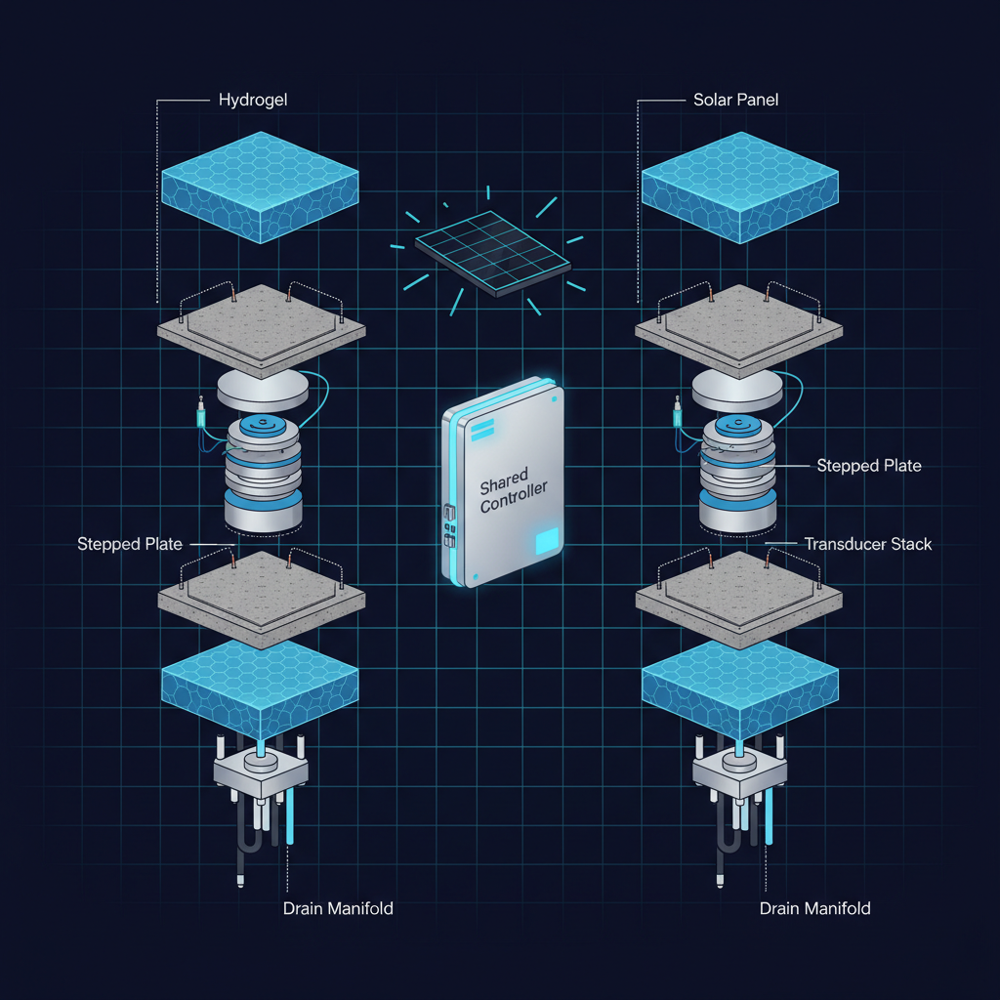

agua pura del aire
agua pura del aire
...vía vórtice ultrasónico
Aquasonica convierte en agua potable pura la humedad existente en el aire que te rodea todos los días. Utilizando hidrogeles higroscópicos que, por su composición molecular, absorben naturalmente grandes cantidades de humedad atmosférica, nuestros equipos extraen esa humedad acumulada a través de vórtices ultrasónicos que obligan al hidrogel a soltar su contenido en forma de agua 100% pura.
Sin compresores caros de adquirir y de operar por su alto consumo de energía, mantenimiento constante, uso de refrigerantes y químicos tóxicos para el medio ambiente, nuestra tecnología consume tan poca energía que es mucho más compatible con energía solar. Y, a diferencia de la tecnología anticuada que produce agua a través de refrigeración y condensación —y que solo funciona de forma eficiente cuando hay altos niveles de humedad relativa— nuestra tecnología funciona con tan solo 25% de humedad relativa.
La Sequía Invisible
Aunque muchos en Colombia no tienen ni idea, millones de colombianos enfrentan escasez de agua todos los días. Ríos enteros se han secado, los embalses caen por debajo del 67%, y miles de familias pagan hasta cuatro veces el precio normal por agua en carro tanque. Todo esto mientras la realidad es que el aire sobre ellos contiene miles de millones de litros de vapor de agua sin aprovechar. Una verdadera paradoja.
Ciencia Sofisticada pero Sencilla
Aquasonica se basa en un estudio llevado a cabo por investigadores de la prestigiosa universidad Massachusetts Institute of Technology (MIT) y publicado en la revista científica Nature Communications. En ese estudio encontraron la manera de reemplazar el compresor devorador de energía de los generadores de agua tradicionales por una idea mucho más simple: dejemos que el agua venga a nosotros y luego extraigámosla con ondas ultrasónicas.
El Hidrogel que Bebe del Aire
En el corazón de cada unidad Aquasonica hay una fina lámina de hidrogel — un polímero cargado con el desecante sal de cloruro de litio, desarrollado por investigadores de la Universidad de Stanford en California, USA. El cloruro de litio es higroscópico: atrae moléculas de agua del aire como una esponja atrae agua de una superficie. La estructura del polímero retiene la sal en su lugar para reutilizarla indefinidamente. Esto funciona desde un 25% de humedad relativa, donde los sistemas basados en compresor fallan.
El hidrogel PAM-LiCl optimizado por el Dr. Yi Cui y su equipo en Stanford alcanza una absorción de 3,15 g/g a 75% HR y mantiene su integridad mecánica durante más de 8 meses de uso continuo.
Ondas de Sonido que Liberan el Agua
Una vez saturado, el hidrogel retiene el agua con fuerza. Los sistemas tradicionales usan calor — lento, costoso en energía y dañino para el gel. Aquasonica usa ultrasonido. Un transductor ultrasónico unido a una placa escalonada de aluminio envía vibraciones precisas a través del gel. En dos minutos, la energía mecánica rompe los enlaces entre el agua y el polímero, y el agua se libera en forma líquida. Solo con ondas ultrasónicas.
El Secreto de la Placa Escalonada
Una placa plana de aluminio conectada a un transductor ultrasónico vibra con fuerza en el centro y débilmente en los bordes — dejando zonas muertas donde el agua nunca se libera. Las placas de Aquasonica están diseñadas con escalones concéntricos. Cada escalón actúa como una capa de adaptación de impedancia, tomando la vibración intensa del transductor central y redistribuyéndola uniformemente en toda la superficie. Combinado con un barrido lento de frecuencia (±2 kHz), esto elimina las zonas muertas y logra extracción uniforme en toda la lámina de hidrogel.
Dos Superficies, Un Solo Mecanismo
En los modelos Familiar e Industrial, dos placas recubiertas de hidrogel se enfrentan con un conjunto compartido de transductores entre ellas. La onda estacionaria rebota de un lado a otro, excitando ambas capas de hidrogel simultáneamente. Esto duplica el área activa de sorción y extracción sin aumentar la huella, mientras el módulo electrónico compartido mantiene el costo bajo.
Elija su Capacidad
Cada sistema Aquasonica utiliza la misma tecnología central. La diferencia es la capacidad — desde una unidad personal que cabe en lugares reducidos hasta un sistema industrial que abastece a una aldea. Todos los modelos funcionan con 24V DC y son compatibles con energía solar.

Modelo Personal
Para consumo personal. Una placa escalonada de 50×50 cm con 0,25 m² de hidrogel.


Modelo Familiar
La unidad doméstica. Una placa escalonada de doble cara de 1×1 m con 1 m² de hidrogel activo — suficiente agua para beber y cocinar para una familia de cuatro.


Modelo Industrial
Dos placas escalonadas de 1×1 m, cada una de doble cara, entregando 2 m² de hidrogel activo. Modular: los paneles pueden enviarse por separado, desplegarse en dos ubicaciones o apilarse en una sola carcasa.

Todos los precios son en pesos colombianos. Todos los modelos comparten el mismo núcleo: hidrogel, extracción ultrasónica, placas escalonadas de aluminio, alimentación 24V DC, y cero refrigerantes o químicos. Los precios mostrados no incluyen costo de envío, el cual se cotiza por separado.
Naturalmente Pura
Como Aquasonica cosecha agua directamente del vapor atmosférico, comienza limpia. No hay minerales disueltos que eliminar, ni residuos químicos de uso común en la industria agrícola, ni subproductos de tratamiento que preocupen.
El resultado es agua tan pura que necesita remineralizarse para el sabor — no purificarse. Ofrecemos un cartucho de minerales como accesorio opcional para hogares que prefieren la sensación de agua de manantial.
El hidrogel PAM-LiCl no es tóxico. El polímero de poliacrilamida es inerte una vez reticulado, y el cloruro de litio es una sal segura utilizada en aplicaciones médicas y alimentarias.
Especificaciones del Sistema
Detalles técnicos del núcleo Aquasonica. Todos los modelos comparten el mismo principio de operación y los mismos materiales críticos.
Principio de Operación
- Sorción: Hidrogel PAM-LiCl absorbe vapor de agua del aire desde 25% HR.
- Extracción: Ondas ultrasónicas (>20 kHz) liberan el agua del hidrogel en ~2 minutos.
- Distribución: Placa escalonada de aluminio con barrido de frecuencia ±2 kHz para uniformidad.
- Recolección: Gravedad. El agua cae a un colector inferior.
Especificaciones Eléctricas
- Alimentación: 24V DC
- Consumo por modelo: Personal 10–15 W; Familiar 15–25 W; Industrial 25–40 W
- Compatibilidad solar: Panel 100W (Personal); 200W (Familiar); 400W (Industrial)
Materiales del Hidrogel
- Composición: Poliacrilamida (PAM) + cloruro de litio (LiCl)
- Capacidad de absorción: 3,15 g/g a 75% HR; 1,26 g/g a 30% HR
- Toxicidad: No tóxico. Polímero inerte y sal segura.
- Vida útil: >2 años con uso continuo; >8 meses en pruebas de estrés a 75°C
Frecuencia Ultrasónica
- Rango: Frecuencias ultrasónicas superiores a 20 kHz
- Barrido: ±2 kHz para eliminar zonas muertas
- Transductor: PZT-5H o PZT-8, acoplado a placa escalonada de aluminio
Dimensiones de Placa
- Personal: 50 × 50 cm, 0,25 m²
- Familiar: 100 × 100 cm, 1 m² (doble cara)
- Industrial: 2 × (100 × 100 cm), 2 m² (doble cara)
Rango de Operación
- Humedad relativa: 25% – 100%
- Temperatura: 5°C – 45°C
Certificaciones en Proceso
- ICONTEC — certificación de producto en trámite
- INVIMA — registro sanitario en trámite
- Se publicarán los certificados de análisis de laboratorio independiente cuando estén disponibles.
Del Agua a la Energía
La misma plataforma de cavitación ultrasónica que extrae agua del aire también puede generar calor y, en una configuración futura, electricidad. El colapso de las burbujas de cavitación libera energía localizada intensa — que puede capturarse y convertirse. Estamos desarrollando activamente la próxima generación de sistemas Aquasonica para entregar no solo agua, sino energía.
Generación de Calor Ultrasónico
La cavitación produce calor controlado sin combustión. Ideal para esterilización, cocción y calefacción en entornos fuera de la red.
Cosecha de Energía por Cavitación
Captura del diferencial de presión del colapso de burbujas usando circuitos piezoeléctricos de recuperación — el inverso de nuestro proceso de extracción.
Agua + Energía Integradas
Una sola plataforma Aquasonica entregando agua limpia y energía de 24V DC desde el mismo núcleo ultrasónico.
Pre-Ordene su Aquasonica
Las primeras unidades de producción se envían en el cuarto trimestre de 2026. La producción inicial es limitada. Reserve ahora con un depósito del 50% — totalmente reembolsable si cancela antes del envío.
Pago seguro vía Stripe o PayPal. Para compradores institucionales, gobiernos municipales y ONG, contáctenos directamente para precios al por mayor y términos de programas piloto.
Referencias
- Nature Communications — Estudio del MIT sobre recolección ultrasónica de agua atmosférica: https://www.nature.com/articles/s41467-025-65586-2
- MIT News — Dispositivo ultrasónico acelera drásticamente la recolección de agua del aire: https://news.mit.edu/2025/ultrasonic-device-dramatically-speeds-harvesting-water-air-1118
- Stanford University — Optimización del hidrogel PAM-LiCl para recolección de agua atmosférica: https://searchworks.stanford.edu/articles/cmedm__38399905
- WaterGen — Precios y especificaciones de sistemas comerciales: https://www.watergen.com
- AirWater — Datos de precios y rendimiento de generadores industriales: https://www.airwater.com
- Gobierno de Colombia — Financiación de infraestructura hídrica de emergencia, La Guajira: https://www.minvivienda.gov.co/comunicaciones/gobierno-nacional-asigna-recursos-para-garantizar-acceso-agua-en-la-guajira
- ICONTEC — Proceso de certificación de productos: https://www.icontec.org
- INVIMA — Reglamentos de seguridad alimentaria y calidad del agua: https://www.invima.gov.co
- Sitio web en vía de construcción: https://zaknick.github.io/aquasonica/